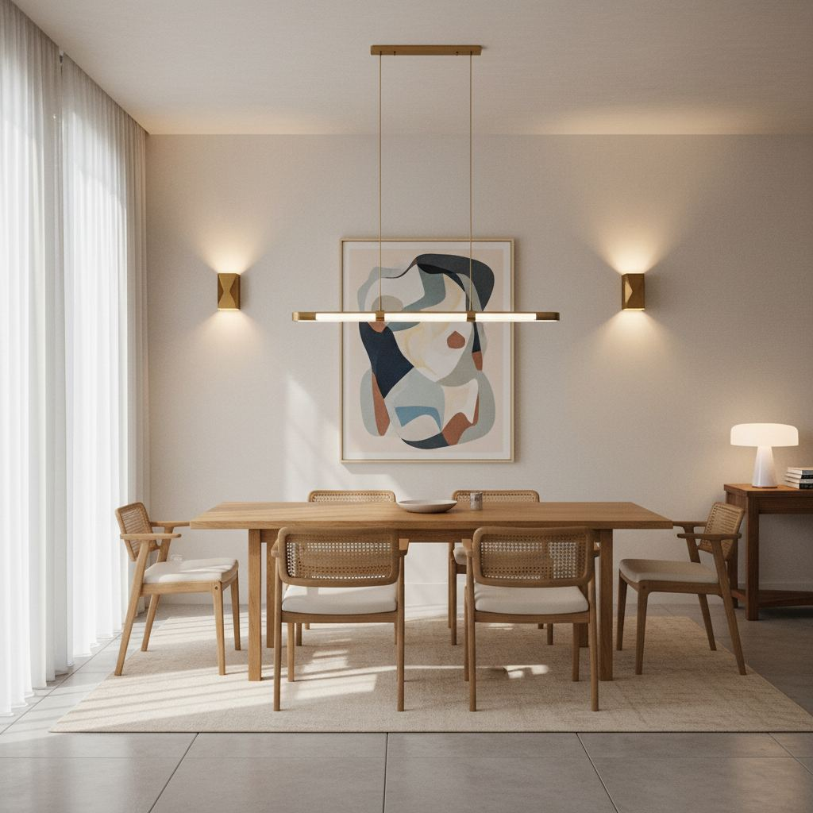

Dining Room Lighting Guide: Pendants, Height, and Bulbs

Dining lighting is easy to get wrong and easy to get right. Three numbers cover most of it.
Pendant size vs table
The pendant (or the widest point of a linear fixture) should be roughly one-half to two-thirds the width of the table. Smaller looks tentative; larger overwhelms.
Hanging height
The bottom of the fixture should hang 30–36 inches above the table surface. If your ceilings are higher than 9 feet, add an inch for every extra foot of ceiling height.
Bulb and dimmer
Warm-white bulbs at 2700K on a dimmer will do more for the room than switching fixtures. Never install a dining light without a dimmer.

Layered Lighting: Beyond the Pendant
While the perfect pendant light is undoubtedly the star of your dining room, true sophistication in illumination comes from a thoughtful approach to layered lighting. Relying solely on a single overhead fixture, no matter how exquisite, can create harsh shadows and a flat, uninviting atmosphere. Think of your dining room lighting as a symphony, with the pendant as the lead vocalist, supported by an orchestra of accent and ambient fixtures. A common mistake I see is overlooking the importance of supplementing the pendant with other light sources, leaving the corners of the room dark and unutilized.
To achieve a truly well-lit and inviting space, consider incorporating several layers. Ambient light provides the overall illumination, typically from your pendant or possibly recessed lighting. Task lighting, while less prominent at the dining table itself, might come from nearby sconces for serving or a buffet lamp. Finally, accent lighting highlights architectural features, artwork, or specific decor elements, adding depth and interest. This multi-faceted approach allows you to adjust the mood for different occasions, from a brightly lit family dinner to a more intimate, softly illuminated gathering. It’s about creating versatility and visual comfort.
Integrating Wall Sconces for Ambiance and Function
Wall sconces are an often underutilized element in dining room design, offering both aesthetic appeal and practical benefits. When strategically placed, they can significantly enhance the ambient light, especially in larger rooms or those with high ceilings where a single pendant might fall short. For a standard 8-foot ceiling, I recommend mounting sconces so their center is approximately 60-66 inches from the floor, keeping them above eye level to avoid direct glare. If your dining room boasts artwork or a sideboard, consider placing a sconce on either side to frame and illuminate these features. This creates a balanced visual weight and draws attention to your curated decor.
When selecting sconces, pay attention to their light distribution. Uplight sconces create a dramatic wash across the ceiling, making the room feel taller. Downlight sconces can highlight a buffet or serving area, while those with both up and down components offer a more diffused glow. Materiality also plays a key role; brass sconces (around $150-$400 each) can introduce a touch of vintage glamour, while contemporary matte black options (starting around $80 each) offer a sleeker profile. Always consider the scale of your sconces relative to the wall space and the overall design language of your dining room to ensure they complement, rather than overwhelm, your pendant.
Recessed Lighting: Strategic Placement for Underrated Support
Recessed lighting is the unsung hero of dining room illumination, providing unobtrusive ambient light that supports, rather than overshadows, your primary pendant. A common misstep is installing too many recessed lights or placing them haphazardly, resulting in an overly bright, cafeteria-like feel. Instead, think of them as strategic accents. For a typical dining room, I usually recommend 4-6 recessed lights, depending on the room's size, placed around the perimeter of the room, roughly 2-3 feet from the wall. This placement washes the walls with light, making the room feel larger and brighter without creating harsh glare directly over the table.
The type of trim and beam spread are crucial considerations. A narrow beam (25-35 degrees) is excellent for spotlighting artwork or architectural details, while a wider flood (50-60 degrees) provides more general ambient illumination. I always advise using 'eyeball' or adjustable trims (ranging from $15-$40 per fixture) for recessed lights in a dining setting. This allows you to direct the light exactly where it’s needed – perhaps highlighting a treasured hutch or a collection on a display shelf – ensuring maximum flexibility. Pair these with warm white LED bulbs (2700K-3000K) on a dimmer to seamlessly integrate them with your pendant's mood.
Beyond the Buffet: Unexpected Table Lamp Placement
While buffet lamps are a classic choice for adding ambient light and decorative flair, don't limit your thinking to just a single pair. Consider introducing a smaller, sculptural table lamp on a nearby console, a decorative rolling bar cart, or even on a window sill if space permits. This unexpected placement adds pockets of soft illumination that break up the visual expanse of the room and introduce a cozy, intimate feel. A small ceramic lamp with an opaque shade (think $80-$250 for a mid-range piece) can cast a beautiful, directional glow, highlighting a carefully chosen arrangement of decorative objects.
Another often-overlooked opportunity is using a plug-in picture light to illuminate a large piece of art or a mirror that occupies a prominent wall. These specific fixtures, typically costing $50-$150, are designed to cast light directly onto the object, drawing the eye and adding a museum-like quality to your display. The key here is balance; ensure these additional lamps don't compete with the pendant but rather create harmonious layers of light. Experiment with different heights and shade materials to add textural interest and further define the room's character. Using a lamp with a linen or silk shade, for instance, provides a softer, more diffused light than a metal shade.
Designing for Various Occasions: Flexibility is Key
The dining room isn't a static space; it transforms from a casual breakfast nook to a formal dinner setting, and your lighting should be equally adaptable. A common pitfall is installing fixed lighting that only serves one purpose, leaving you struggling to create the right atmosphere for different events. My advice is to design with flexibility in mind from the outset. This means ensuring each layer of your lighting – pendant, sconces, recessed lights, and lamps – is independently controlled. This often involves separate dimmers for each circuit, which will typically cost an additional $20-$50 per dimmer switch for parts.
- **Formal Dinners:** Dim the pendant to 40-60%, activate sconces at 75%, and illuminate recessed lights on a low setting (20-30%) to add subtle wall wash.
- **Casual Meals:** Pendant at 75-100%, sconces off, and recessed lights only if additional ambient light is needed for tasks like children's homework.
- **Intimate Gatherings:** Pendant very low (10-20%), sconces at 50%, and potentially a table lamp for a soft, localized glow. Recessed lights off unless highlighting specific features.
- **Daytime Lounging/Reading:** Pendant off, potentially a floor lamp nearby, or natural light amplified by reflective surfaces.
By incorporating separate controls and utilizing dimmers, you gain the power to fine-tune the ambiance for any occasion, ensuring your dining space is always inviting and perfectly lit. This granular control over your lighting setup is truly what elevates a well-designed dining room into a versatile and cherished space.
Key takeaways
- Pendant width: half to two-thirds of the table.
- Hang 30–36 inches above the table.
- Warm bulbs, always dimmable.
Frequently asked questions
Can I use recessed lighting instead of a pendant?
You can, but a pendant defines the dining zone visually and creates the sense of a room within a room. Most designers use both.

Sophia Bennett is a certified interior stylist and the senior editor at Styleire. She has spent more than eight years helping homeowners and renters create warm, functional interiors, with hands-on experience across small city apartments and family homes. Her work has been informed by close collaboration with independent designers, craftspeople, and product testers.
View full profile →Related reading

Open Kitchen Shelving: When It Works, When It Doesn't
Open shelving looks great in photos. In real kitchens, it is a lifestyle choice, not a style choice.

Small Kitchen Decor Ideas That Add Style Without Clutter
Every square inch of counter matters in a small kitchen. Here is how to add style without losing prep space.